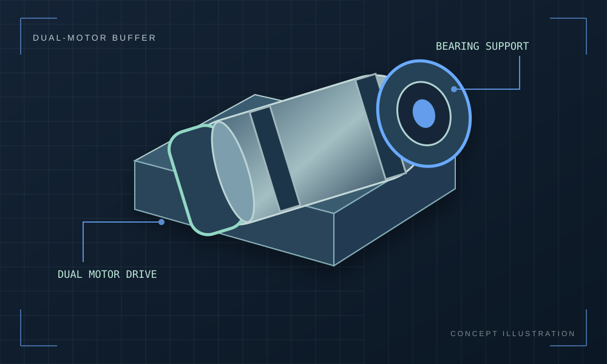

Dual-Motor Buffer End Effector.
Designing a compact, bearing-supported rotary cleaning tool for a robotic arm.
Goal
Design a rotary cleaning end effector that can withstand sideways contact forces against mirrors and countertops.
How I approached it
Separate shaft torque transmission from radial-load support with bearing-supported sleeves, couplings, and axial retention features.
Result / status
Mechanical architecture and CAD studies in progress; no completed load-test results are documented.

Illustrative technical graphic. Replace with original project CAD renders, drawings, and photographs when available.
A buffer that handles side loading.
The robotic cleaning tool uses rotating cylindrical buffers against surfaces such as mirrors and counters. The contact force acts transverse to the motor shaft, so the goal is to keep that force from bending or overloading the motor output.
Separate load support from torque transfer.
The design must transmit torque to the buffing cylinder while supporting radial force through bearings. Axial retention is needed to keep the housing engaged, and the entire assembly must still be possible to manufacture, assemble, and service.
Design the load path.
- 01
Modeled a sleeve around the motor and explored a bearing-supported outer housing to carry lateral loads.
- 02
Investigated shaft couplings and elastomeric spider elements for torque transfer while accommodating minor alignment differences.
- 03
Considered retaining rings for the inner and outer bearing races to prevent unwanted axial movement.
- 04
Reviewed bearing fit, printed-versus-machined tolerances, and assembly order before selecting a final hardware stack.
An engineered concept, not a proven tool yet.
The work so far defines an approach for supporting transverse force independently of the motor shaft and maintaining positive axial retention. Final bearing selection, coupler details, and representative surface-contact testing remain to be completed.
A good assembly needs a build sequence.
The coupling and bearing stack cannot be evaluated only in a CAD assembly. Each part needs a feasible installation path, accessible retention features, and realistic tolerances.
What I would validate next
Next: finalize bearing fit, positive axial retention, and coupling details; build a prototype and test under representative side loads.